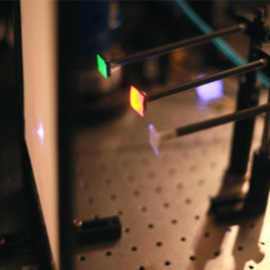

We demonstrate a new method to detect and distinguish among different types of fluorescent materials. The suggested technique, with many biomedical applications, has provided a dramatically larger depth range compared to previous methods; thus it enables medical diagnosis of body tissues without removing the tissue from the body, which is the current medical standard. This method uses fluorescent probes, which are commonly used in medical diagnosis since they can be engineered to attach or change their emission parameters when interacting with specific types of tissues. One of these parameters is the fluorescence lifetime - the average time the fluorescence emission lasts. The new method can distinguish between different fluorescence lifetimes, which allows diagnosis of deep tissues.
Locating fluorescence probes in the body using this method can, for example, indicate the location of a tumor in deep tissue, and classify it as malignant or benign according to the fluorescence lifetime, thus eliminating the need for X-ray or biopsy. The method is not limited to biomedical applications and can also be used in industrial and general remote sensing applications, such as inspection, identification and flowmetry.
Allow non-invasive in-vivo detection and classification of tumors.
Doctors will use medical imaging techniques (like CT) to detect possible locations of tumors. Classification of a tumor as malignant or benign usually requires extracting a piece of that tissue for biopsy and analyzing it under a microscope. A widely used method for such analysis is FLIM (florescence lifetime imaging), where the fluorescence lifetime provides information on the surrounding tissue. However, FLIM requires extraction of the tissue from the body.
Our method allows to measure the florescence lifetime while the fluorophore is embedded within the tissue. Thus, there is no need for invasive measures such as tissue extraction. To accomplish this, our method is based on a time-resolved measurement and signal processing algorithms that localize and classify the fluorescent tags behind scattering layers.
The long term goal can potentially shorten diagnosis cycles and reduce the number of invasive procedures, thus improving the overall health diagnosis process and reduce costs within the healthcare system.
Fluorescent markers are widely used as contrast agents in CT and MRI scans. They are also an important tool when performing biopsies.
When the fluorophore is excited, the fluorescence isn’t emitted immediately. The time that passes before the emission is known as the fluorescence lifetime (which is an average, since the process is random). This time can be a function of the environment, and so it is an important tool that can assist in classifying the fluorophore environment.
A streak camera is a device that captures time information along a line in space (each column corresponds to a different location along the line, and each row corresponds to a different time). When a light pulse enters the instrument through a narrow slit along one direction, it is deflected in the perpendicular direction, so that photons that arrive first hit the detector at a different position compared to photons that arrive later. The resulting image forms a “streak” of light. Streak tubes are often used in chemistry or biology to observe millimeter-sized objects.
In this project we demonstrated the concept on a 0.7mm thick opaque glass. However, due to the great signal-to-noise properties of our algorithm, it can work in deep tissues as well. The limitation on depth is due to time blur from the scattering, which should be on shorter time scales than the fluorescence lifetime.
Fluorescence markers tend to generate sparse images. We use a sparsity prior as part of the reconstruction algorithm to make it more robust.